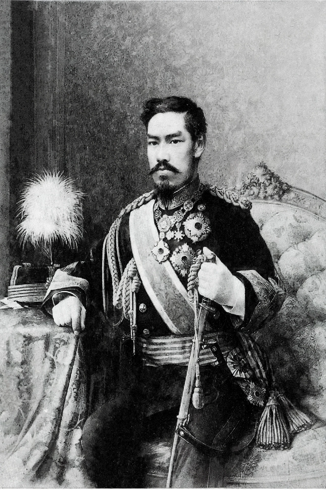

| Emperor Meiji | |
|---|---|
 Emperor Meiji in 1888 | |
| Reign | 3 February 1867 – 30 July 1912 |
| Born | 3 November 1852, Kyoto, Japan |
| Died | 30 July 1912 (aged 59), Tokyo, Japan |
| Predecessor | Emperor Kōmei |
| Successor | Emperor Taishō |
| Spouse | Empress Shōken |
| Era name | Meiji |
Emperor Meiji (明治天皇, Meiji-tennō, 3 November 1852 – 30 July 1912), also called Meiji the Great, was the 122nd emperor of Japan according to the traditional order of succession. He reigned from 1867 until his death in 1912 and presided over the Meiji Restoration, the rapid modernization that transformed Japan from an isolationist feudal state into an industrialized world power.
Born Mutsuhito in Kyoto, he ascended the throne aged fourteen after the death of his father, Emperor Kōmei. The following year the shogunate was abolished, imperial rule was formally "restored," and the capital moved from Kyoto to Edo, renamed Tokyo. Although real political power was exercised largely by the oligarchs of the genrō, the emperor served as the symbolic center of the new state and sanctioned its sweeping reforms.
Mutsuhito was born on 3 November 1852 at the Gosho in Kyoto, the son of Emperor Kōmei and his concubine Nakayama Yoshiko. Like most imperial children of the period he was raised by his mother's family. He was proclaimed crown prince and formally adopted by Empress Eishō in 1860, receiving the personal name Mutsuhito. His education was largely in the Confucian and courtly tradition, though he reportedly disliked study and preferred sumo, poetry, and horse-riding.
The political crisis of the 1860s, triggered by the arrival of Commodore Perry's ships in 1853 and the unequal treaties that followed, culminated in the Boshin War of 1868–69, in which forces loyal to the emperor defeated the Tokugawa shogunate. In 1868 the young emperor issued the Charter Oath, promising deliberative assemblies and the pursuit of knowledge throughout the world. The era name Meiji, meaning "enlightened rule," was adopted the same year.
During his reign Japan abolished the feudal domains, created a conscript army, built railways and telegraph networks, adopted a constitution, and industrialized at extraordinary speed. The emperor moved to Tokyo in 1869, appeared increasingly in Western-style military uniform, and became the focal point of a state-sponsored imperial cult promoted through schools and the military.
In 1889 he promulgated the Meiji Constitution, modeled partly on the Prussian constitution, which made him sovereign head of state, commander of the armed forces, and the source of legislative authority, while establishing the Imperial Diet. Under his reign Japan won the First Sino-Japanese War (1894–95) and the Russo-Japanese War (1904–05), annexed Korea in 1910, and was recognized as one of the great powers. The emperor's war poetry, including a famous poem on the brotherhood of the "four seas," was widely quoted.
Emperor Meiji died in Tokyo on 30 July 1912, reportedly of diabetes and uraemia, aged 59. He was succeeded by his son, Emperor Taishō. He is enshrined at the Meiji Shrine in Tokyo, completed in 1920, and buried at the Fushimi Momoyama mausoleum in Kyoto. His reign is remembered as the period in which Japan laid the institutional foundations of the modern Japanese state.